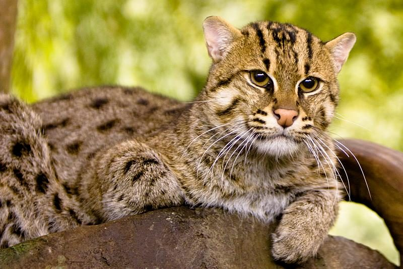

फिशिंग कैटFishing Cat
Prionailurus viverrinus · Felidae · MAM-0027

- Scientific nameवैज्ञानिक नाम
- Prionailurus viverrinus (Bennett, 1833)
- Familyकुल
- Felidae
- Hindiहिंदी
- फिशिंग कैट
- Local namesस्थानीय नाम
- fishing cat, fishing billi, machli billi, fishing kat
- Status hereयहाँ की स्थिति
- native
- Movementआवागमन
- Resident, here all year
- IUCNIUCN
- VU
- Reviewसमीक्षा
- audited and independently read
When to look कब देखें
Present all year.साल भर मौजूद।
Tell it apart from इनसे अलग पहचानें
फिशिंग कैट / Fishing Cat
Prionailurus viverrinus (Bennett, 1833) — Felidae
फिशिंग कैट — भारत के नदियों और आर्द्रभूमि का एक दुर्लभ, छोटा जंगली बिल्ली जो पानी में शिकार करता है। इसका शरीर मजबूत, पैर छोटे, और पंजे अर्ध-वापस होने योग्य (semi-retractable) होते हैं। इसकी पुकार तीव्र और चीत्कार जैसी होती है। यह रात और सुबह के समय सक्रिय रहता है, नदियों में मछलियां और केकड़े पकड़ता है। इसके दांत और जबड़े गीली मछली को पकड़ने के लिए विशेष रूप से अनुकूलित हैं। वन्यजीव संरक्षण अधिनियम 1972 की अनुसूची II में सूचीबद्ध, यह एक असुरक्षित जानवर है जो आवास के नुकसान और जल प्रदूषण से खतरे में है। इसका अस्तित्व नदी की गुणवत्ता और स्वास्थ्य का एक सूचक है।
Quick Identification त्वरित पहचान
| Feature | Description |
|---|---|
| Size | Small wild cat; head-body length 41–50 cm; weight 1.5–3 kg |
| Coat | Reddish-brown or grey-brown; short, dense fur; no stripes or spots |
| Head | Small, rounded; ears small and rounded; set low on head |
| Eyes | Green or yellow; positioned forward for binocular vision |
| Legs | Short and robust; feet partially webbed (semi-aquatic) |
| Paws | Large for body size; claws semi-retractable; adapted for gripping wet prey |
| Tail | Short and thick; used for balance in water |
| Body | Stocky and muscular; adapted for aquatic hunting |
| Geographic range | Range-restricted to Ghaghra and Girwa river systems; Vulnerable; critically endangered |
Field tip: A small, brown wild cat with short legs, rounded ears, and small eyes; found near water. Partly webbed feet and semi-retractable claws distinguish it from other cats. Hunts in and around water; extremely rare.
हिंदी — कैसे पहचानें:
छोटी जंगली बिल्ली, भूरे रंग की।
पानी के पास मिलती है।
पैर छोटे, पंजे अर्ध-वापस।
बहुत दुर्लभ, सुरक्षित।
Morphology आकारिकी
Biometrics (typical measurements for Indian populations):
| Measurement | Range |
|---|---|
| Head-body length | 410–500 mm |
| Tail length | 130–150 mm |
| Height at shoulder | 25–35 cm |
| Weight | 1.5–3 kg |
Body structure: Compact and robust, with short, powerful legs adapted for aquatic hunting. The body is muscular and slightly elongated. The head is small and rounded, with relatively small ears positioned low on the head. The muzzle is short and broad.
Fur: Short, dense coat, providing insulation in cold water. Coloration reddish-brown to grey-brown, with two dark longitudinal stripes on the crown. No spots or other markings (unlike some other small cats). Belly slightly paler than back.
Claws: Large, relatively straight, and semi-retractable (partially extendible but not fully retractable like domestic cats). This is an adaptation for gripping wet, slippery prey.
Feet: The toes are partially webbed (interdigital membrane present), a unique feature among felids. This webbing aids in swimming and climbing over wet rocks.
Eyes: Forward-positioned, giving binocular vision. Eyes green or yellow-green; pupils round and dilate well in low light (crepuscular/nocturnal adaptation).
Ears: Small, rounded, with limited pinnae. Low positioning and small size reduce heat loss in aquatic environment.
Tail: Short and thick, with well-developed musculature. Used for balance in water and on wet surfaces.
Sexual dimorphism: Males slightly larger than females.
Behaviour & Ecology व्यवहार और पारिस्थितिकी
Semi-aquatic specialist: Unlike most cats, the Fishing Cat is highly adapted to aquatic life. It hunts in shallow water, along riverbanks, and in marshes, using its partially webbed feet and semi-retractable claws to grasp slippery prey.
Aquatic hunting method: Hunts by wading in shallow water, using its sensitive whiskers and keen eyesight to detect prey movements. May dive to capture fish. Also hunts from the water's edge, dipping its paw into water to hook prey.
Solitary behaviour: Unlike social carnivores, Fishing Cats are solitary except during mating season. Males establish and defend large territories along river systems.
Crepuscular activity: Most active during twilight hours (dawn and dusk) and at night. Activity increases during monsoon when water levels rise and prey is abundant.
Diet specialization: Feeds almost exclusively on fish, but also takes crustaceans (crabs, shrimp), molluscs, and occasionally amphibians and small mammals.
Vocalisation: Produces distinct chatter, growls, and meows; a distinctive loud chatter is given during mating season.
Life Cycle / Phenology जीवन चक्र
| Stage / season | Event |
|---|---|
| Year-round | Solitary, territorial males and females; non-breeding except during breeding season |
| December–March | Breeding season; males seek females; territorial calling increases |
| March–April | Mating; gestations period 56–60 days |
| April–June | Females give birth to 1–4 kittens in dens along riverbanks |
| June–August | Kittens learn to hunt and swim; begin eating solid food |
| August–December | Kittens remain with mother; learning independence |
| Lifespan | 10–15 years in wild; longer in captivity |
Host Plants or Prey आहार
| Prey Type | Examples | % of Diet (estimated) |
|---|---|---|
| Fish | Small cyprinids, catfish, murrels | 70–80% |
| Crustaceans | Crabs, shrimp, freshwater crayfish | 15–20% |
| Molluscs | Snails, mussels | 5–10% |
| Other | Frogs, occasionally small mammals/birds | < 5% |
हिंदी: मुख्य भोजन: मछलियां, केकड़े, झींगे। जलीय जीवों का शिकारी।
Predators / Natural Enemies शत्रु
Adults: Few natural predators due to aquatic habitat; large crocodiles (in some rivers), large snakes, large eagles occasionally.
Kittens:
- Monitor lizards and large snakes
- Eagles and other large raptors
- Occasionally jackals or wild boar raiding dens
Human persecution: Historically hunted for fur; currently threatened by habitat loss, water pollution, dam construction, and incidental capture in fishing nets.
Agricultural / Human Relevance कृषि प्रासंगिकता
Conservation status: The Fishing Cat is listed as Vulnerable (VU) by the IUCN Red List and is protected under Schedule II of the Wildlife Protection Act, 1972. Populations have declined severely across their historical range due to habitat loss and water pollution.
Fisheries conflict: In areas with fishing, Fishing Cats may be perceived as competitors. However, their consumption of fish is minimal compared to human fishing.
Habitat requirement: Requires perennial river systems with abundant fish populations, suitable denning habitat (riverbank caves or dense vegetation), and clean water. Dam construction, water abstraction, and pollution severely degrade habitat.
Water quality indicator: The presence of Fishing Cats indicates relatively healthy river ecosystems. Their absence signals environmental degradation.
Cultural significance: In some cultures, the Fishing Cat is respected as a hunter and wilderness indicator. In others, it is viewed with suspicion.
Conservation efforts: Protected reserves and wetland conservation areas support populations. Research on population status and habitat requirements is ongoing in key river systems.
Expected Locally स्थानीय रूप से अपेक्षित
Not a field record. Written from published accounts for eastern Uttar Pradesh. No confirmed local sighting yet — if you have seen it, that is what the atlas needs.
अभी तक स्थानीय पुष्टि नहीं। यह विवरण प्रकाशित स्रोतों से है, किसी अवलोकन से नहीं।
This species is NOT a field record. The distribution below is based on published sources describing where Fishing Cats should be looked for in eastern Uttar Pradesh. This is a range expectation only, not a documented local record.
यह स्थानीय अवलोकन नहीं है — केवल रेंज अपेक्षा है। प्रकाशित स्रोतों से अपेक्षित।
Fishing Cats are expected only in the Ghaghra and Girwa river systems that border Basti and Ayodhya districts, based on their known range and habitat requirements. However, no recent confirmed local records exist. They prefer clean, fish-rich river stretches with dense riparian vegetation for cover. They are strictly nocturnal and crepuscular, rarely seen during the day. Sightings are extremely rare and highly significant; if observed, this is exactly what the atlas needs. A first local record should include precise location (specific river section with GPS), time (confirming dawn, dusk, or night), and, if possible, evidence such as tracks, scat, or audio recording of calls.
Distribution वितरण
Global range: South and Southeast Asia — India, Bangladesh, Sri Lanka, Nepal, Thailand, Cambodia, Vietnam, Myanmar.
In India: Scattered populations in river systems across the country; populations highly fragmented and declining.
In Uttar Pradesh: Restricted to the Ghaghra and Girwa river systems; historically more widespread; current status uncertain.
In Basti district / eastern UP: Range-expected in Ghaghra and Girwa rivers; no recent confirmed records; populations severely depleted or locally extinct.
Research Questions शोध प्रश्न
Anyone can investigate these | कोई भी इन प्रश्नों की जाँच कर सकता है
- Are Fishing Cats still present in the Ghaghra and Girwa rivers? — A critical conservation question requiring systematic surveys.
- What is the current population status and distribution along these river systems? — Long-term monitoring is essential.
- What environmental factors (river health, fish abundance, habitat structure) are associated with Fishing Cat presence? — Habitat characterization studies.
- How does water pollution and dam construction affect local populations? — Assessing impact of human activities.
- क्या बस्ती की नदियों में मत्स्य पालन बिल्ली अभी भी है? (Are Fishing Cats still present in Basti rivers?) — Most critical question.
Similar Species मिलती-जुलती प्रजातियाँ
| Species | How to tell apart | हिंदी | ||
|---|---|---|---|---|
| Flat-headed Cat (Prionailurus planiceps) — if present | Similar size but head shape different; coastal mangrove specialist; not found in Uttar Pradesh | चपटा सिर बिल्ली | Flat-headed Cat has different head shape and coastal habitat. Fishing Cat has rounded head and river habitat. | |
| [[jungle_cat\ | Jungle Cat]] (Felis chaus) — larger relative | Larger (head-body 40 cm+); longer legs; less aquatic; different habitat (grassland, scrub) | जंगल बिल्ली | Jungle Cat is larger, less aquatic. Fishing Cat is smaller, with webbed feet, aquatic specialization. |
Field rule: A small, brown wild cat with short legs, partially webbed feet, and semi-retractable claws, found near water, is a Fishing Cat. It is protected, Vulnerable, and extremely rare. Any sighting is significant and should be reported immediately to the atlas.
Taxonomy & Classification वर्गीकरण
Original description. The Fishing Cat was first described by Edward Turner Bennett in 1833. The genus Prionailurus is a group of small Asian felids.
Subspecies. Prionailurus viverrinus viverrinus — the nominate subspecies found in South Asia (India, Sri Lanka, Bangladesh).
Family and order placement. Family Felidae (cats); order Carnivora.
Phylogenetic notes. Prionailurus is an early-diverging felid lineage. Molecular studies show the genus is monophyletic. The semi-aquatic adaptations of P. viverrinus represent unique specialization within Felidae.
IUCN status rationale. Vulnerable (VU) due to severe habitat loss (wetland conversion, dam construction, water extraction), water pollution, incidental capture in fishing nets, and hunting for fur. Population declines have been documented across the range. Habitat fragmentation has isolated populations, preventing gene flow.
Photo Gallery फोटो गैलरी
Photos critically needed अत्यन्त आवश्यक फोटो
- [ ] Individual showing distinctive webbed feet and claws (वेबड पंजे)
- [ ] Fishing Cat in or near water hunting (शिकार करता हुआ)
- [ ] Close-up of face showing rounded ears and eyes (चेहरा विवरण)
- [ ] Tracks or scat in river habitat (पदचिह्न या मल)
No photos yet — add field photos to media/species/fishing_cat/ and run node scripts/sync_photos.js.
Any photograph of a Fishing Cat in Basti would be a critical contribution to conservation.
Atlas Connections संबंधित प्रजातियाँ
- Smooth-coated Otter — shares the same river habitat and aquatic food web
- Gharial — shares the same river ecosystem (potentially competitors for fish)
- Mugger — shares the same river ecosystem
- Green Keelback — shares aquatic habitat
References संदर्भ
- Bennett, E. T. (1833). On the Viverrine cats, with the description of a new species. Proceedings of the Zoological Society of London, 1833: 36–38.
- Prater, S. H. (1971). The Book of Indian Animals. Oxford University Press, Bombay. Pp. 168–169.
- Sunquist, M. & Sunquist, F. (2002). Wild Cats of the World. The University of Chicago Press, Chicago. Pp. 160–162.
- Hussain, S. A. (1993). Status and conservation of the Fishing Cat Prionailurus viverrinus (Bennett 1833) in Bangladesh. Biological Conservation 65(1): 49–56.
- IUCN Red List (2023). Prionailurus viverrinus — Felid Specialist Group assessment. Status: Vulnerable. https://www.iucnredlist.org
- GBIF Occurrence Data — Prionailurus viverrinus, India (2026).
Source file: species/fauna/mammals/fishing_cat.md